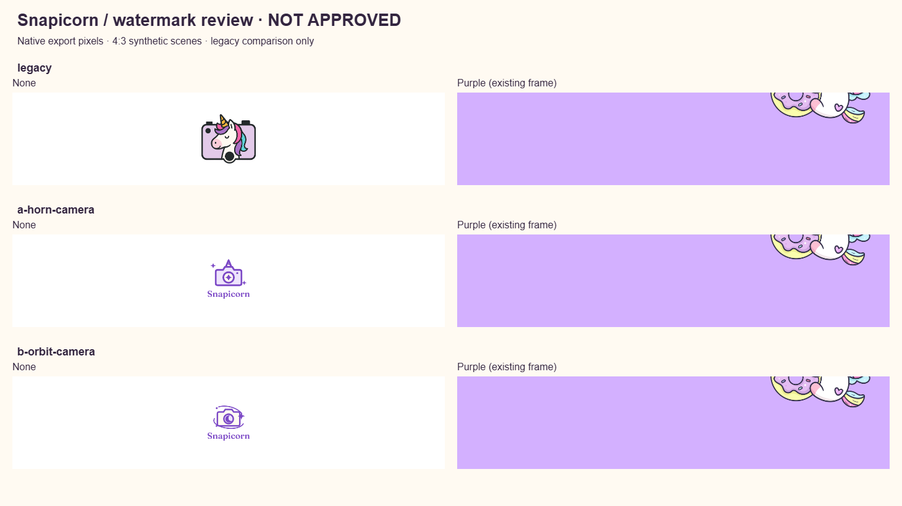

Legacy / comparison only
Current runtime watermark.
Two independently drawn Snapicorn watermark proposals. Not approved. Not active in production.
Review notes, provenance and approval requirements · Verification record
Purple currently hides the watermark. The existing frame is drawn after the watermark and is opaque over its footer. Legacy and proposals are equally hidden. This review preserves that behavior. The purple swatch below is a color test, not a proposed change to layering or the frame.
Identical original synthetic landscape fixtures in all strips; no personal photos or Gallery data. The local renderer calls the current production composition functions without editing them.
Current runtime watermark.
Direct unicorn cue; bold, simple lens.
Crescent lens; a softer celestial direction.
Checking review images…
Bottom 150 pixels of each 4:3 strip at 1 image pixel per CSS pixel. Scroll horizontally on smaller screens. Browser zoom and display density can affect physical size.

Each 690 × 624 RGBA candidate is shown inside the compositor’s 88.46 × 80 pixel bounding box. Backgrounds belong to this review page and are not baked into the files. The lettering scales to a roughly 14 px font size; assess legibility at native size before approving.
Choose A, B, or request revisions; approve the selected exact PNG and native-size None baseline, confirm the documented source/use authority, and explicitly authorize a separate integration task. Acknowledge that the unchanged Purple frame hides the watermark. Purple visibility requires a separate frame/layering decision. No integration or publication follows automatically from this review.